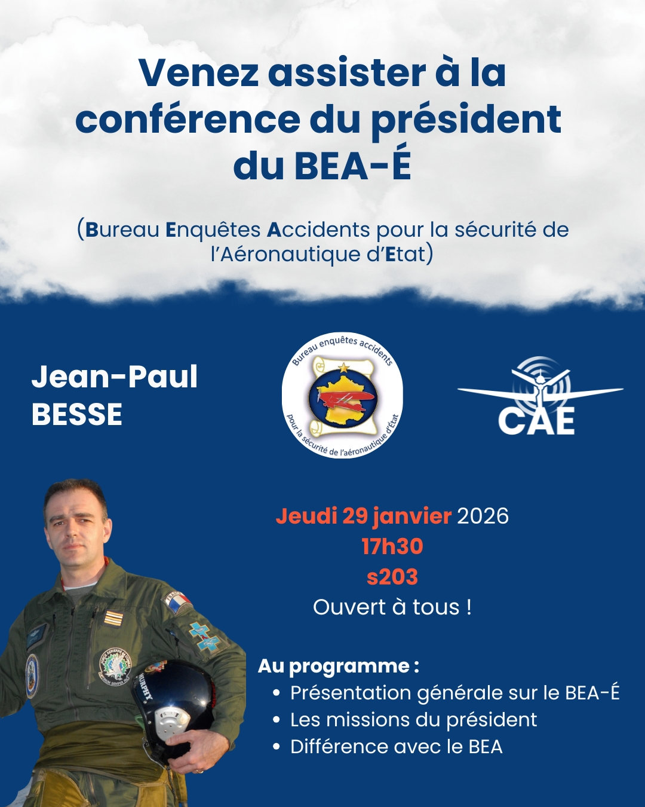
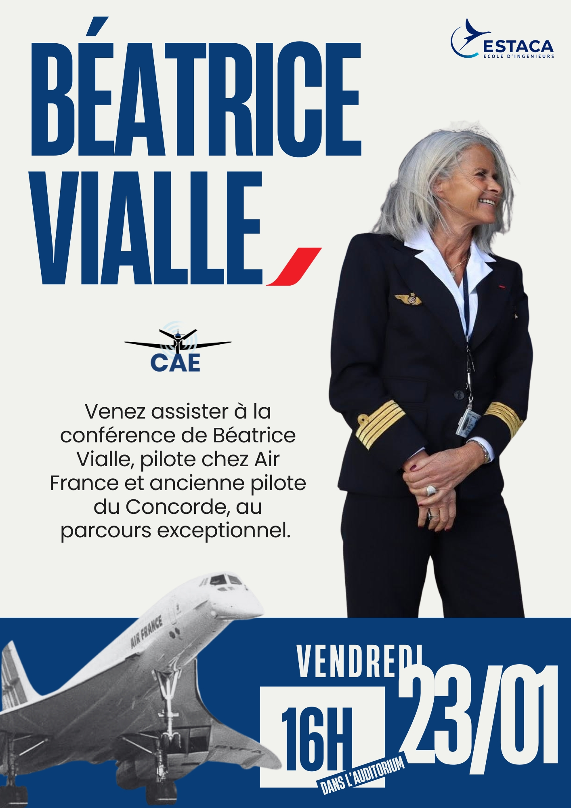
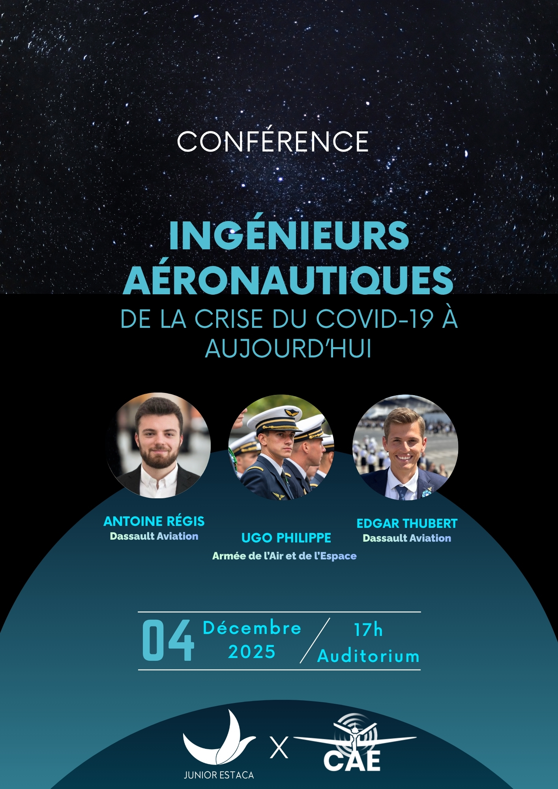
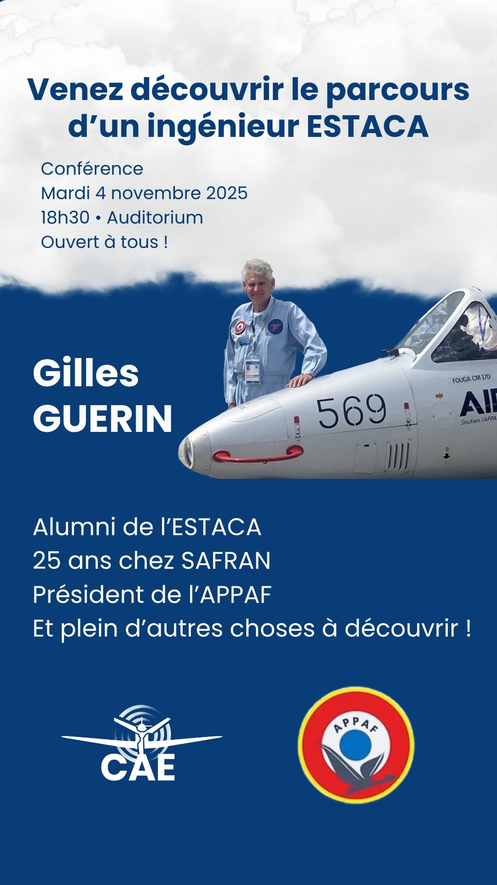
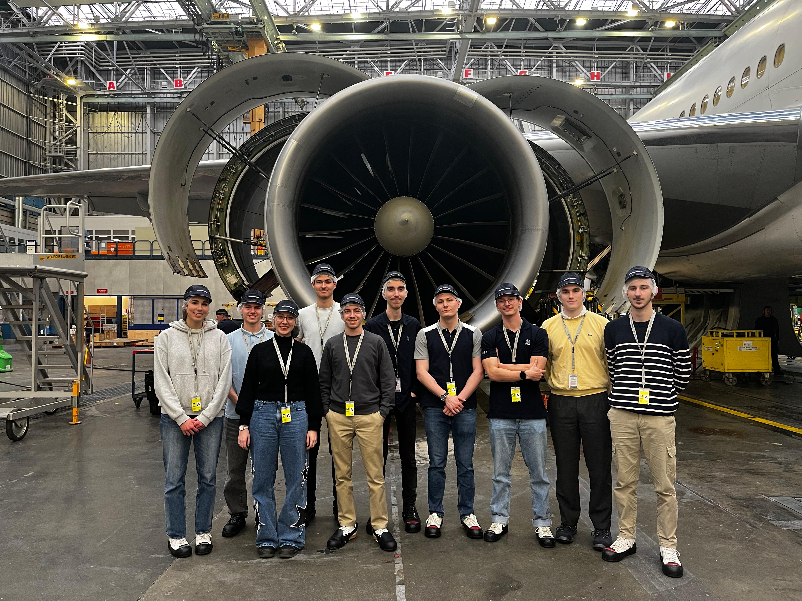
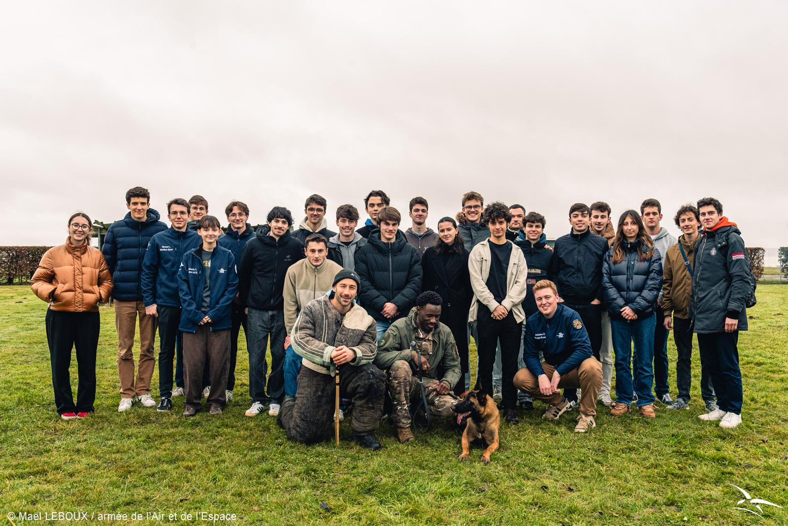
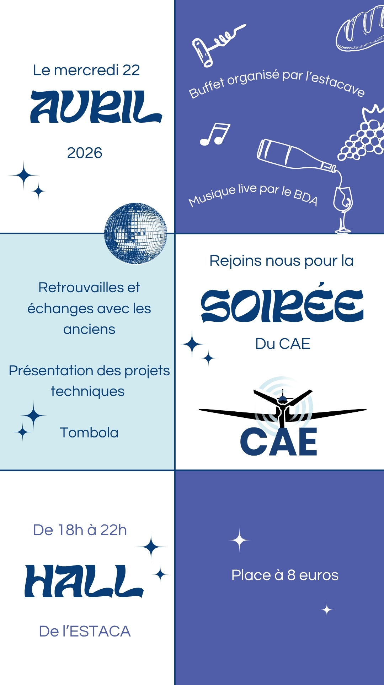

Conférence président du BEA-é - 29/01/2026
Jeudi 29 janvier 2026, nous avons eu le plaisir d’accueillir Jean-Paul Besse, président du BEA-é (Bureau Enquêtes Accidents pour la sécurité de l’aéronautique d’État) pour une conférence.
Le pôle Event a une seule mission : organiser les meilleures sorties, conférences et voyages en rapport avec l'aéro !



Jeudi 29 janvier 2026, nous avons eu le plaisir d’accueillir Jean-Paul Besse, président du BEA-é (Bureau Enquêtes Accidents pour la sécurité de l’aéronautique d’État) pour une conférence.

Vendredi 23 janvier 2026, nous avons eu l'honneur d'accueillir Béatrice Vialle, commandant de bord sur 777 au parcours exceptionnel.

Mercredi 4 décembre, Junior ESTACA et le CAE ont eu le plaisir d'accueillir une conférence exceptionnelle animée par trois Alumni de l'école.

Le mardi 4 novembre 2025, le CAE eu l'honneur d'accueillir Gilles Guerin, alumni de l'école, aujourd'hui ingénieur chez Safran et président de l'Association pour la Préservation du Patrimoine Aéronautique Français.

Le 24 février 2025, le Cercle Aéronautique de l’ESTACA a accueilli Pierre Beyaert, ingénieur d’essais en vol chez Dassault Aviation, pour une conférence technique et captivante.

Le 27 janvier 2025, le Cercle Aéronautique de l’ESTACA a accueilli Grégory Leopold-Metzger, ancien pilote de chasse et ex-pilote de la Patrouille de France, pour une conférence immersive sur son parcours.

Nous avons eu le plaisir d’accueillir Dassault Aviation pour une conférence exceptionnelle sur l’aptitude opérationnelle et la certification aéronautique.

Le CAE à eu le plaisir d'accueillir Christophe Caillaud, mécanicien réacteur chez Air France Industries, et Harald Joset, Financial Controller for Engines Business Unit et enseignant à l'ESTACA.

Nous avons eu l'honneur d'accueillir le Lieutenant-Colonel Émilie C., de l'Armée de l'air et de l'espace, à la tête du CDC 07.927, chargé de la surveillance aérienne de la moitié Nord du territoire national.

Le 24 octobre 2024, le CAE a eu le plaisir d'accueillir Nicolas « ғɪsʜ » Lerouge pour un moment de partage entre passionnés d'aéronautique.

Le jeudi 22 janvier 2026, les membres du CAE ont eu la chance de visiter les hangars Boeing d'Air France à Roissy Charles-De-Gaulle.

Le 11 décembre 2025, la base aérienne de Vélizy-Villacoublay nous a ouvert ses portes.

Le CAE a eu le plaisir de visiter l'usine Thales Aerospace Communications à Troyes.
Le CAE a eu le plaisir de visiter de nouveau les ateliers de maintenance d'Air France à Roissy, dédié aux long-courriers de la flotte.

Jeudi 29 février, le CAE a pu se rendre sur ce site spécialisé dans les activités de radar de surface.

Le CAE a eu le plaisir de visiter les ateliers de maintenance d'Air France à Roissy, et plus précisément le hangar H1, dédié aux long-courriers tels que les Boeing 777 et 787.

Du 4 au 7 février 2026, 15 adhérents CAE se sont rendus à Bordeaux pour un voyage convivial et aéronautique !

Du 21 au 23 mars 2024, le CAE a eu le plaisir de convier 16 adhérents au voyage annuel organisé dans le Sud-Est de la France !

Le mercredi 22 avril s’est tenue la soirée annuelle du CAE, permettant de rassembler membres, anciens et partenaires de l'association pour un moment convivial et célébrer la fin d'une année.

Le jeudi 24 avril s’est tenue la soirée annuelle du Cercle Aéronautique de l’ESTACA, un moment chaleureux marqué par des retrouvailles uniques entre membres actuels, alumni et partenaires. Une belle occasion de célébrer l’année écoulée et de renforcer les liens autour des projets du CAE.

Le Jeudi 25 avril s'est déroulée la soirée annuelle du CAE au sein du campus Saint-Quentin-en-Yvelines de l'ESTACA. Cet événement a permis de rassembler toutes celles et ceux qui font et qui ont fait vivre notre association.